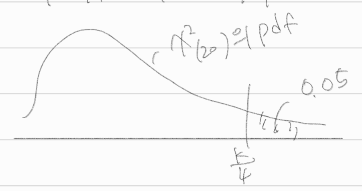
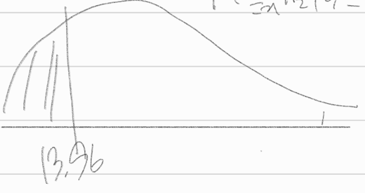
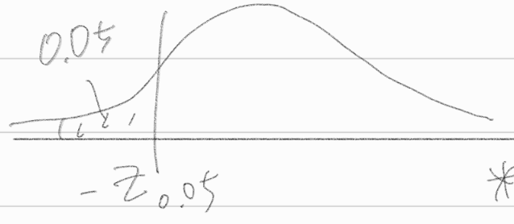
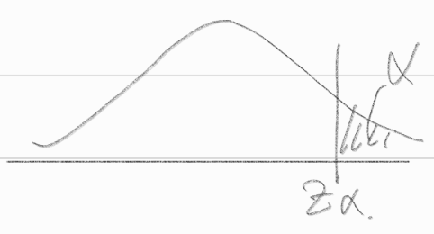
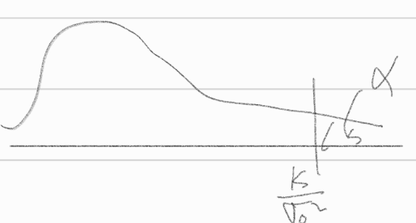
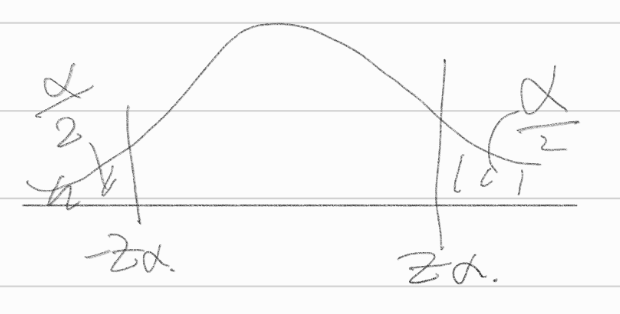

qchisq(0.95,20)
31.4104328442309
SEOYEON CHOI
January 20, 2023
5장 이표본 검정법
\(X_1, \dots, X_n\)을 \(N(0,\sigma^2)\)으로부터의 랜덤표본이라고 하자
가설 \(H_0 : \sigma^4 = 4\) vs \(H_1 : \sigma^2 = 9\)에 대한 최강력 검정의 기각역은
\[C = \{ (x_1, \dots, x_n) : \sum^n_{i=1} x^2_i \ge c \}\]
의 꼴로 주어짐을 보이시오.
answer
\(L(\sigma^2) = \Pi^n_{i=1} f(x_2 : \sigma^2) = \Pi^n_{i=1} \frac{1}{\sqrt{2\pi\sigma^2}}e^{-\frac{x_i^2}{2\sigma^2}} * \mu=0\)
\(= (\frac{1}{2\pi\sigma^2})^{\frac{n}{2}} e^{-\frac{\sum^n_{i=1}x_i^2}{2\sigma^2}}\)
네이만 피어슨 정의에 의하면, \(LR = \frac{L(H_0)}{L(H_1)} = \frac{L(4)}{L(9)} \le k\)
\(LR = \frac{L(4)}{L(9)} = \frac{(\frac{1}{2\pi 4})^{\frac{n}{2}} e^{-\frac{\sum^n_{i=1} x_i^2}{2 \times 4}}}{(\frac{1}{2\pi 9})^{\frac{n}{2}} e^{-\frac{\sum^n_{i=1} x_i^2}{2 \times 9}}}\)
\(= (\frac{9}{4})^{\frac{n}{2}}e^{-\sum^n_{i=1}x^2_i(\frac{1}{8}-\frac{1}{18})}\)
\(= (\frac{9}{4})^{\frac{n}{2}}e^{-\frac{5}{72}\sum^n_{i=1}x^2_i} \le k\)
\(\to e^{-\frac{5}{72}\sum^n_{i=1}x^2_i} \le k\)
\(\to -\frac{5}{72}\sum^n_{i=1}x^2_i \le k\)
\(\to \sum^n_{i=1}x^2_i \ge k\)
기각역: \(\therefore c = \{ (x_1, \dots ,x_n) : \sum^n_{i=1} x^2_i \ge c)\)
표본의 크기가 \(n=20\)일 때 유의수준이 \(\alpha=0.05\)이기 위한 상수 \(c\)의 값을 구하시오.
answer
\(\alpha = P(\text{Reject } H_0 | H_0 \text{True})\)
\(= P(\sum^n_{i=1}x^2_i \ge k | \sigma^2 = 4)\)
\(\star\)
모집단 분포 \(X_i \sim N(0,\sigma^2)\)
표준화 \(\frac{X_i}{\sigma} \sim N(0,1)\)
표분화 제곱 분포는 카이제곱 \((\frac{X_i^2}{\sigma})^2 \sim \chi^2_1, i=1,2,\dots, n\)
카이제곱의 합의 자유도 합 \(\sum^n_{i=1}(\frac{X_i}{\sigma})^2 \sim \chi^2_{(n)}\)
\(\star\)
\(= P(\sum^n_{i=1}\frac{\chi^2_i}{\sigma^2} \ge \frac{k}{\sigma^2}|\sigma^2 = 4)\)
\(= P(\sum^{20}_{i=1} \frac{\chi^2_i}{4} \ge \frac{k}{4} | \sigma^2 = 4)\)

\(\frac{k}{4} = \chi^2_{0.05(20)}\)
\(k = 4\chi^2_{0.05(20)} = 125.64\)
\(c = \{(x_1,\dots,x_n) : \sum^n_{i=1}\ge 125.64\}\)
표본의 크기가 \(n=20\)일 때 (2)에서 찾은 기각역에 대한 제 2종 오류를 범할 확률
\[\beta = P(\sum^n_{i=1} X^2_i \le c| \sigma^2 = 9)\]
의 값은?
answer
\(\beta = P(\sum^n_{i=1}\chi^2_i \le c|\sigma^2 = 9)\)
\(= P(\sum^n_{i=1} \chi^2_i \le 125.64 | \sigma^2 = 9)\)
\(= P(\sum^n_{i=1} \frac{\chi^2_i-0}{\sigma^2} \le \frac{125.64-0}{\sigma^2} | \sigma^2 = 9)\) 표준화, 평균은 0
\(= P(\sum^n_{i=1} \frac{\chi^2_i}{9} \le \frac{125.64}{9} | \sigma^2 = 9)\)
\(= P(\sum^n_{i=1}\frac{\chi^2_i}{9} \le 13.96) = 0.20\)

\(X \sim B(2,p)\)에 대하여 가설 \(H_0 : p = \frac{1}{2}\) vs \(H_1 : p = \frac{2}{3}\)을 고려하자.
유의수준 \(\alpha \le \frac{1}{2}\)인 검정법의 기각역을 모두 제시하라.
answer
모집단 \(B(2,p)\)
\(f(x:p) = \begin{pmatrix} 2 \\ x \end{pmatrix} p^x (1-p)^{2-x}\)
\(\alpha = P(X \in c | p =\frac{1}{2}) \le \frac{1}{2}\), \(f(x: \frac{1}{2}) = \begin{pmatrix} 2 \\ x \end{pmatrix} (\frac{1}{2})^2\)
\(x = 0,1,2\)
8가지 경우 존재
\(\{0 \}\), $P(x = 0 | p = ) =
\[\begin{pmatrix} 2 \\ 0 \end{pmatrix}\]()^2 = $ 가능
\(\{1 \}\), $P(x = 1 | p = ) =
\[\begin{pmatrix} 2 \\ 1 \end{pmatrix}\]()^2 = $ 가능
\(\{2 \}\), $P(x = 2 | p = ) =
\[\begin{pmatrix} 2 \\ 2 \end{pmatrix}\]()^2 = $ 가능
\(\{0,1 \}\), \(P(x = 2 | p = \frac{1}{2}) = f(0:\frac{1}{2}) + f(1:\frac{1}{2}) = \frac{1}{4} + \frac{1}{2} = \frac{3}{4} \to \text{ NOT } \le \frac{1}{2} \therefore\) 불가능
\(\{0,2 \}\), \(P(x = 2 | p = \frac{1}{2}) = f(0:\frac{1}{2}) + f(2:\frac{1}{2}) = \frac{1}{4} + \frac{1}{4} =\frac{1}{2} \to \le \frac{1}{2} \therefore\) 가능
\(\{1,2 \}\), \(P(x = 2 | p = \frac{1}{2}) = f(1:\frac{1}{2}) + f(2:\frac{1}{2}) = \frac{1}{2} + \frac{1}{4} = \frac{3}{4} \to \text{ NOT } \le \frac{1}{2} \therefore\) 불가능
\(\{0,1,2 \}\), \(P(x = 2 | p = \frac{1}{2}) = f(0:\frac{1}{2}) + f(1:\frac{1}{2}) + f(2:\frac{1}{2})= \frac{1}{4} + \frac{1}{2} + \frac{1}{4} =1 \to \text{ NOT } \le \frac{1}{2} \therefore\) 불가능
\(\{\phi\}\) 사건이 전혀 발생하지 않는 것이니 제외
(1)의 기각역들 중 \(\alpha + \beta\)를 최소화하는 기각역을 구하라.
answer
\(\beta = P(\text{Not Reject } H_0 | H_1 \text{True})\)
\(= P(X \notin c | P = \frac{2}{3})\)
\(= 1-P(X \in c | P = \frac{2}{3})\)
\(\beta = 1-f(0:\frac{2}{3}) = 1-\begin{pmatrix} 2 \\ 0\end{pmatrix} (\frac{2}{3})^0 (\frac{1}{3})^2 = \frac{8}{9}\)
\(\alpha + \beta = \frac{1}{4} + \frac{8}{9} = \frac{41}{36}\)
\(\beta = 1-f(1:\frac{2}{3}) = 1-\begin{pmatrix} 2 \\ 1\end{pmatrix} (\frac{2}{3})^1 (\frac{1}{3})^1 = 1- \frac{4}{9} = \frac{5}{9}\)
\(\alpha + \beta = \frac{1}{2} + \frac{5}{9} = \frac{19}{18} = \frac{38}{36}\)
\(\beta = 1-f(2:\frac{2}{3}) = 1-\begin{pmatrix} 2 \\ 2\end{pmatrix} (\frac{2}{3})^2 (\frac{1}{3})^0 = 1-\frac{4}{9}=\frac{5}{9}\)
\(\alpha + \beta = \frac{1}{4} + \frac{5}{9} = \frac{29}{36}\)
\(\beta = f(1:\frac{2}{3}) = \begin{pmatrix} 2 \\ 1\end{pmatrix} (\frac{2}{3})^1 (\frac{1}{3})^1 = \frac{4}{9}\)
\(\alpha + \beta = \frac{1}{2} + \frac{4}{9} = \frac{17}{18} = \frac{34}{36}\)
\(\therefore\) 제일 작은 기각역인 3번\(\{ 2\}\)가 기각역일 때 \(c = ( x \in \{2\})\)가 \(\alpha + \beta\)값이 최솟값이 된다.
이항분포 \(B(10,p)\)에서 하나의 관찰값 \(X\)을 얻을 때, 가설 \(H_0 : p \le \frac{1}{2}\) vs $ H_1 : p > $의 기각역으로 \(C = \{ x : x \ge 7 \}\)을 택한 검정의
\(\star\) tip? hint?
\(f(x:p) = \begin{pmatrix} 10 \\ x \end{pmatrix} p^x (1-p)^{10-x}\)
귀무가설이 복합가설이다.
유의수준을 구하라.
answer
\(\alpha = P(\text{Reject } H_0 | H_0 \text{ True})\)
= 귀무가설 하에서 \(p\)값의 범위 중 기각할 확률의 최댓값
= \({max}_{p\le\frac{1}{2}} P(\text{Reject } H_0 | p) \to \Pi(p)\)
\(= \Pi(p) = P(\text{Reject } H_0 | p)\)
\(= P(X \ge 7|p)\)
\(= \sum_{x \ge7} f(x:p) = \sum_{x \ge 7} \begin{pmatrix} 10 \\ x \end{pmatrix}p^x (1-p)^{10-x}\)
\(\star p <1\) 구간에서 증가함수다.
\(\Pi(\frac{1}{2}) = \sum_{x\ge7} \begin{pmatrix} 10 \\ x \end{pmatrix} (\frac{1}{2})^2 = \{ \begin{pmatrix} 10 \\ 7 \end{pmatrix} + \begin{pmatrix} 10 \\ 8 \end{pmatrix} + \begin{pmatrix} 10 \\ 9 \end{pmatrix} + \begin{pmatrix} 10 \\ 10 \end{pmatrix} \} \{ (\frac{1}{2})^{10}\}\)
검정력함수를 구하라.
answer
\(\beta = P(\text{Not Reject } H_0 | H_1 \text{True})\)
= 대립가설 하 p값의 범위 중 기각하지 않을 확률의 최솟값
\(X_1,X_2,\dots,X_n\)이 \(U(0,\theta)\),\(\theta>0\)로부터 얻은 랜덤표본이라고 하자. 이 때 \(H_0: \theta = \theta_0\) 대 \(H_1:\theta < \theta_0\)에 대한 균일 최강력검정의 기각영역을 구하고, 그것이 귀무가설을 \(H_0: \theta \ge \theta_0\)으로 택했을 때도 역시 균일 최강력검정이 됨을 보여라.
\(H_0: \theta = \theta_0\) 대 \(H_1:\theta < \theta_0\)에 대한 균일 최강력검정의 기각영역을 구하기
answer
\(H_0 : \theta = \theta_0\), \(H_1 : \theta = \theta_0\), \((\theta_1<\theta_0)\) 기각역은 \(c = \{ (x_1,\dots,x_n):\frac{L(\theta_0)}{L(\theta_1)} \le k\}\)
\(L(\theta) = \Pi^n_{i=1} f(x:\theta) = \Pi^n_{i=1} \frac{1}{\theta} I(0<x_i < \theta) = \frac{1}{\theta^n}I(0<x_{(1)}<x_{(n)} <\theta)\) 모든 값들이 0과 1사이에 존재
가능도비 \(LR = \frac{L(\theta_0)}{L(\theta_1)} = \frac{\frac{1}{\theta^2_0} I(0<x_{(n)} < \theta_0)}{\frac{1}{\theta^n_1}I(0<x_{(n)} < \theta_1)} \le k\)
\(\begin{cases} X_{(n)} < \theta_1 , & LR = (\frac{\theta_1}{\theta_0})^n & \to \text{분자, 분모 범위가 모두 1이 됨!} \le k \text{이 부분만 남고} \\ \theta_1 \le X_{(n)} < \theta_0 & LR = \frac{1}{0} = \infty & \to \text{ k보다 작을 수 없음} \\ X_{(n)} \ge \theta_0 & LR = \frac{0}{0} & \to \text{ 고려하지 않을 것이다.어차피 제외될 걸??} \end{cases}\)
\(c = \{ x_{(n)} \le c\text{ 상수}\}\)
기각역의 모양이 \(X_{(n)}\le c\)일 때, \(\le k\)가 성립
\(c = \{ X_{(n)} \le c \}\)
\(\alpha = P(X_{(n)} \le c | \theta = \theta_0 \} = \int^c_{-\infty} f_n (x : \theta_0)dx\)
\(\star\)
최댓값\(X_{(n)}\)의 확률밀도함수 \(\to f_n(x:\theta) = n(\{ F(x:\theta)\}^{n-1} f(x:\theta) = n(\frac{x}{\theta})^{n-1} \frac{1}{\theta} I(0<x<\theta)\)
\(= \int^c_{-\infty} n(\frac{x}{\theta_0})^{n-1} \frac{1}{\theta_0} I(0<x<\theta_0)dx \to c>\theta_0\text{ 면 무조건 1이다.}\)
\(\int^c_0 n(\frac{x}{\theta_0})^{n-1} \frac{1}{\theta_0}dx = (\frac{x}{\theta_0})^n \to c = \alpha^{\frac{1}{n}} \theta_0\)
유의수준 \(\alpha\)인 최강력 기각역 \(X_{(n))} < \theta_0 \alpha^{\frac{1}{n}} \to \theta_1\text{ 과 관련이 없다.} \to \text{모든 }\theta \text{에 대한 가설의 균일 최강력 기각역}\)
\(H_0: \theta=\theta_0,H_1: \theta = \theta_1(\theta < \theta_1)\)
귀무가설을 \(H_0: \theta \ge \theta_0\)으로 택했을 때도 역시 균일 최강력검정이 됨을 보이기
answer
\(H_0:\theta \ge \theta_0\) 귀무가설이 복합가설일 때
\(\alpha = {max}_{\theta\ge\theta_0} \Pi (\theta)\) 검정력 함수의 maximum 이다.
\(= {max}_{\theta\ge\theta_0} P(\text{Reject } H_0|\theta)\)
\(= {max}_{\theta\ge\theta_0} P((x_1, \dots, x_n) \in x| \theta)\)
\(= {max}_{\theta\ge\theta_0} P(x_{(n)} \le \theta_0 \alpha^{\frac{1}{n}}|\theta)\)
\(\star\)
\(\Pi(\theta) = P(X_{(n)} \le c)\)
\(= P(x_{(n)} \le \alpha^{\frac{1}{n}} \theta_0 | \theta) = \int^{\alpha^{1/n}\theta_0}_{-\infty} f_n (x:\theta) dx\)
\(= \int^{\alpha^{1/n}\theta_0}_{-\infty} n (\frac{x}{\theta})^{n-1} \frac{1}{\theta} I (0<x< \theta)\)
\(= \int^{\alpha^{q/n}\theta_0}_0 n (\frac{x}{\theta})^{n-1} \frac{1}{\theta} dx = (\frac{\alpha^{\frac{1}{n}}\theta_0}{\theta})^n = \alpha(\frac{\theta_0}{\theta})^n\)
\(\star\)
\(\therefore \alpha = {max}_{\theta \ge \theta_0}\Pi(\theta) = {max}_{\theta \ge \theta_0} P(X_{(n)} \le \theta_0 \alpha ^{\frac{1}{n}}| \theta)\)
\(= {max}_{\theta \ge \theta_0} \alpha(\frac{\theta_0}{\theta})^n = \alpha \to \theta\)가 작을 수록 크다., \(\theta_0\)일 때 \(\alpha\)가 크다.
복합가설일 때도 균일 최강력 기각역이 된다.
확률밀도함수가
\[f(x;\theta) = (1+\theta) x^{\theta} I (0\le x \le 1), (\theta >0)\]
인 모집단으로부터 크기가 \(n\)인 랜덤표본을 추출한다고 하자. 이 때 가설
\[H_0:\theta = \theta_0 \text{ vs } H_1 : \theta = \theta_1 (>\theta_0)\]
의 검정에 관하여
최강력 검정의 기각역을 구하라.
answer
Neyman-Pearson 정리 \(c = \{ (x_1,\dots , x_n) : \frac{L(\theta_0)}{L(\theta_1)} \le k\}\)
\(f(x:\theta) = (\theta + 1) x^{\theta} I (0\le x \le 1)\)
\(L(\theta) = \Pi^n_{i=1}f(x_i : \theta) = (\theta+1)^n \Pi^n_{i=1}x_i^{\theta} I(0\le x_i \le 1)\)
\(\frac{L(\theta_0)}{L(\theta_1)} = \frac{(\theta_0 + 1)^n(\Pi^n_{i=1}x_i)^{\theta_0} \Pi^n_{i=1}I(0<x_i <1)}{(\theta_1+1)^n(\Pi^n_{i=1}x_i)^{\theta_1}\Pi^n_{i=1}I(0<x_i<1)}\)
\(\star \uparrow \Pi^n_{i=1}I(0<x_i<1) \to \theta\)랑 무관한 영역이라 무시
\((\Pi^n_{i=1}x_i)^{\theta_0 - \theta_1} \le k\)
\((\theta_0 - \theta_1) \sum^n_{i=1} log x_i \le k\)
\(\sum^n_{i=1} log x_i \ge k\)
\(\star \theta_1 > \theta_0 \to \theta_0 - \theta_1 < 0 \therefore\) 부등호 방향 바뀜
\(c = \{ (x_1,\dots, x_n:\sum^n_{i=1}log x_i \ge k \}\)
(1)에서 구한 검정이 대립가설 \(\theta>\theta_0\)에 대하여 균일최강력 검정이 되는지를 밝혀라.
answer
기각역 \(\sum^n_{i=1}log x_i \ge k\)는 \(\theta_1\)과 무관하다.
\(\theta > \theta_0\)에 대해 \(\sum^n_{i=1}log x_i\)는 최강력 기각역이다.
\(H_0 : \theta = \theta_0\) vs \(H_1 : \theta > \theta_0\)의 균일 최강력 기각역이 될 수 있다.
확률밀도함수가 \(f(x;0)=\theta x^{\theta-1}I(0<x<1)\)인 모집단으로부터 랜덤표본 \(X_1,X_2,\dots,X_n\)을 추출하여 \(H_0 : \theta = \theta_0\) vs \(H_1:\theta \neq \theta_0\)의 가설검정을 하려고 한다. 이 때 균일 최강력 검정이 존재하지 않음을 보여라.
answer
네이만 피어슨 정리 \(c = \{ (x_1,\dots,x_n):\frac{L(\theta_0)}{L(\theta_1)}\le k \}\)
\(L(\theta) = \Pi^n_{i=1}f(x:\theta) = \Pi^n_{i=1}\theta x^{\theta-1}_i I(0<x_i < 1)\)
\(\frac{L(\theta_0)}{L(\theta_1)} = \frac{\Pi^n_{i=1} \theta_0 x_i^{\theta_0 - 1} I(0<x_i<1)}{\Pi^n_{i=1} \theta_1 x_i^{\theta_1-1}I(0<x_i<1)} = (\frac{\theta_0}{\theta_1})^n (\Pi^n_{i=1}x_i)^{\theta_0-\theta_1} \le k\)
\(\to (\Pi^n_{i=1}x_i)^{\theta_0 - \theta_1} \le k\)
\(\to (\theta_0 - \theta_1\Pi^n_{i=1} log x_i \le k\)
\(\to \sum^n_{i=1} log x_i \le k\) 만족하는 표본의 영역이 기각역이다. \(\sim\) 최강력 기각역
\(\to \theta_1\)과 무관하게 결정되는 기각역
\(\therefore\) 이 기각역은 \(H_0:\theta = \theta_0, H_1 : \theta_1 < \theta_0\)의 균일 최강력 기각역이다.
\(\frac{L(\theta_0)}{L(\theta_1)} = \frac{\Pi^n_{i=1} \theta_0 x_i^{\theta_0 - 1} I(0<x_i<1)}{\Pi^n_{i=1} \theta_1 x_i^{\theta_1-1}I(0<x_i<1)} = (\frac{\theta_0}{\theta_1})^n (\Pi^n_{i=1}x_i)^{\theta_0-\theta_1} \le k\)
\(\to (\Pi^n_{i=1}x_i)^{\theta_0 - \theta_1} \le k\)
\(\star \theta_0<\theta_1\)이라 부등호 바뀜
\(\to (\theta_0 - \theta_1\Pi^n_{i=1} log x_i \ge k\)
\(\to \sum^n_{i=1} log x_i \ge k\) 만족하는 표본의 영역이 기각역이다.
\(\to \theta_1\)과 무관하게 결정되는 기각역
이 기각역은 \(H_0 : \theta = \theta_0, H_1 : \theta > \theta_0\)인 모든 경우의 균일 최강력 기각역이다.
균일 최강력 기각역
\(H_0 :\theta = \theta_0, H_1 :\theta<\theta_0: \sum^n_{i=1}log x_i \le k_1\)
\(H_0 :\theta = \theta_0, H_1 :\theta>\theta_0: \sum^n_{i=1}log x_i \ge k_1\)
\(H_0 :\theta = \theta_0, H_1 :\theta\neq\theta_0 \to \theta < \theta_0\) or $ > _0$
\(\therefore\) 어떤 값이냐에 따라 최강력 기각역이 달라지기 때문에 균일 최강력 기각역이 존재하지 않는다.
\(X_1, X-2,\dots,X_n\)이 확률밀도함수가 \(f(x)\)인 어떤 모집단에서 얻어진 랜덤표본이다. \(f_0(x) = I(0<x<1)\)와 \(f_1(x) = e^{-x}I(x>0)\)인 \(f_0,f_1\)에 대해
\[H_0: f(x) = f_0(x) \text{ vs } H_1 : f(x) = f_1(x)\]
을 검정하려고 한다.
최강력 검정의 기각역이 \(\{(x_1,\dots,x_n:x_{(n)}>1,\) 또는 \(\sum^n_{i=1} x_i \le c\}\)임을 보여라.
answer
\(\star\) 모집단을 한가지로 정의 가능해서 단순가설 \(\to\) 네이만 피어슨 정리 사용 가능
\(LR = \frac{L_0}{L_1} = \frac{\Pi^n_{i=1}f_0(x_i)}{\Pi^n_{i=1}f_1(x_i)} = \frac{\Pi^n_{i=1}I(0<x_i<1)}{\Pi^n_{i=1}e^{-x_i}I(x_i>0)}\le k\)
\(= \frac{I(0<x_{(1)}<x_{(n)}<1)}{e^{-\sum^n_{i=1}x_i}I(x_{(1)}>0)}\)
\(= \frac{I(0<x_{(1)} <1)I(0<x_{(n)}<1)}{e^{-\sum^n_{i=1}x_i}I(x_{(1)}>0)}\)
귀무가설을 기각할 기각역 \(\to e^{\sum^n_{i=1}x_i}I(0<x_{(n)}<1)\le k\)
\(\star x_{(n)}>1\)이면 \(I(0<x_{(n)}<1) \to 0\)
\(\star x_{(n)}<1\)이면 \(I(0<x_{(n)}<1) \to 1\)
\(\star \sum^n_{i=1}x_i \le k\)
\(\therefore \{ x_{(n)}>1 \text{ or } \sum^n_{i=1}x_i \le k \}\)이 기각역
유의수준이 \(\alpha = 0.05\)이고 \(n=50\)일 때 중심극한정리를 이용하여 \(c\)의 값을 구하라.
answer
\(P(x_{(n)}>1 \text{ or } \sum^n_{i=1}x_i \le c | H_0 ) = 0.05\)
\(H_0\)는 \(f(x) = I(0<x<1)\)이었다. 즉, \(x\)는 \(1\)보다 클 수 없고, 따라서 \(x_{(n)}\)도 \(1\)보다 클 수 없다.
\(P(x_{(n)} >1 | H_0) = 0\)
\(P(\sum^n_{i=1}x_i \le c|H_0)\)
\(\star\)
\(n=50\), \(x\)가 균등분포
균등분포 평균, 분산 이용한 중심극한정리 \(\to \frac{\bar{x} - \frac{1}{2}}{\sqrt{1/12}/\sqrt{50}} \sim N(0,1)\)
\(\star\)
\(P(\frac{\sum^n_{i=1}x_i}{50} = \bar{x} \le \frac{c}{50}|H_0)\)
$-z_{0.05} =
\(-z_{0.05} = -1.645\), \(c=21.6422\)

\(c = \{ \sum^50_{i=1}x_i \le 21.6422 \}\)
\(X_1,X_2,\dots, X_n\)이 \(N(\mu,\sigma^2)\)로부터 얻은 랜덤표본이라고 하자.
모분산 \(\sigma^2\)가 알려져 있지 않은 경우 \(H_0:\mu \le \mu_0 \text{ vs } H_1 : \mu > \mu_0\)에 대한 유의수준 \(\alpha\)인 일반화 가능도비 검정법을 구하라.
answer
모평균 가설을 검정할때 \(\sigma^2\)이 알려져 있다면, 균일 최강력 검정이 존재한다. 하지만 알려져 있지 않다. \(\to\) 장애요소
\(\Lambda(x_1,\dots,x_n) = \frac{L(\hat{\mu}_0,\hat{\sigma}_0^2)}{L(\hat{\mu},\hat{\sigma}^2)}\) 귀무가설 하 모수가능도 최대치
\(L(\mu, \hat{\sigma}^2) = (\frac{1}{2\pi \sigma^2})^{\frac{n}{2}}e^{-\frac{\sum^n_{i=1}(x_i - \mu)^2}{2\sigma^2}}\)
\({max}_{\Omega_0} L(\mu,\sigma^2)\) 최대는 \(\bar{x}\)이긴 하지만, 귀무가설 하 \(\mu \le \mu_0\)이라는 제약이 있어서 이 조건이 필요하다.
최대가능도 추정량
\(\Lambda = \frac{(\frac{1}{2\pi\hat{\sigma}^2_0})^{\frac{n}{2}}e^{-\frac{\sum^n_{i=1}(x_i - \hat{\mu}_0)^2}{2\hat{\sigma}^2_0}}}{(\frac{1}{2\pi\hat{\sigma}^2})^{\frac{n}{2}}e^{-\frac{\sum^n_{i=1}(x_i - \hat{\mu})^2}{2\hat{\sigma}^2}}} \le k\)
\(\uparrow\) 각 분자, 분모의 \(exp\)에 있는 \(\hat{\sigma}\)들에 각 값을 대입하면
\(\hat{\sigma}_0\)대입하면 \(\to -\frac{\sum^n_{i=1}(x_i - \hat{\mu}_0)^2}{2\frac{1}{n}\sum^n_{i=1}(x_i - \hat{\mu}_0)^2} = \frac{n}{2}\)
\(\hat{\sigma}\) 대입하면 \(\to -\frac{\sum^n_{i=1}(x_i - \hat{\mu})^2}{2\frac{1}{n}\sum^n_{i=1}(x_i - \bar{x})}^2 = -\frac{n}{2}\)
\(\to (\frac{\hat{\sigma}^2}{\hat{\sigma}^2_0})^{\frac{n}{2}} \le k\)
$ k $
대입하면 \(\frac{\sum^n_{i=1}(x_i - \bar{X})^2}{\sum^n_{i=1}(x_i - \hat{\mu}_0)^2} \le k\)
\(\hat{\mu}_o = {min}(\bar{X}, \mu_0)\)
\(c = \{ (x_1,\dots,x_n)|\bar{x} > \mu_0, \frac{\sum^n_{i=1}(x_i - \bar{x})^2}{\sum^n_{i=1}(x_i - \mu_0)^2} \le k\)
\(\sum^n_{i=1}(x_i - \mu_0)^2 = \sum^n_{i=1}(x_i - \bar{x} + \bar{x} - \mu_0)^2\)
\(= \sum^n_{i=1}(x_i - \bar{x})^2 + 2(\bar{x}-\mu_0)\sum(x_i - \bar{x}) + n(\bar{x} -\mu_0)^2\)
\(\star \sum(x_i - \bar{x}) = 0\)
\(= \sum^n_{i=1}(x_i - \bar{x})^2 + n(\bar{x} - \mu_0)^2\)
\(c = \{ (x_1,\dots,x_n)|\bar{x} > \mu_0, \frac{\sum^n_{i=1}(x_i - \bar{x})^2}{\sum^n_{i=1}(x_i - \bar{x})^2 + n(\bar{x} - \mu_0)^2} \le k\)
\(\to \frac{\sum^n_{i=1}(x_i - \bar{x})^2}{\sum^n_{i=1}(x_i - \bar{x})^2 + n(\bar{x} - \mu_0)^2} \le k\)
\(\to \frac{1}{1+\frac{n(\bar{x} - \mu_0)^2}{\sum^n_{i=1}(x_i - \bar{x})^2}} \le k\)
\(\to \frac{n(\bar{x} - \mu_0)^2}{\sum^n_{i=1}(x_i - \bar{x})^2} \ge k\)
\(c = \{ (x_1,\dots,x_n)|\bar{x} > \mu_0, \frac{n(\bar{x} - \mu_0)^2}{\sum^n_{i=1}(x_i - \bar{x})^2} \ge k\)
\(\to \sum^n_{i=1}(x_i - \bar{x})^2 = (n-1)S^2\)
\(\to \frac{n(\bar{x} - \mu_0)^2}{(n-1)S^2} = \frac{n(\bar{x} - \mu_0)^2}{S^2} \ge k\)
\(\star N(\mu, \sigma^2) \to \frac{\bar{x} -\mu}{\sigma/\sqrt{n}} \to \frac{\bar{x}-\mu}{s/\sqrt{n}} \sim t_{(n-1)}\)
\(c = \{ (x_1,\dots, x_n) | \bar{x} > \mu_0, |\frac{\sqrt{n}(\bar{x}-\mu_0)}{S}| \ge k \}\)
\(= \{ (x_1,\dots, x_n) | \bar{x} > \mu_0, \text{ and } (\bar{x} > \mu_0 + \frac{S}{\sqrt{n}}k \text{ or } \bar{x} \le \mu_0 - \frac{X}{\sqrt{n}k})\}\)
\(= \{ (x_1,\dots, x_n) | \bar{x} > \mu_0 + \frac{S}{\sqrt{n}}k\}\)
\(\alpha = {max}_{\Omega_0} \Pi(\mu)\)
\(\Pi(\mu) = P((x_1,\dots,x_n) \in c | \mu)\)
\(= P(\bar{x} \ge \mu_0 + \frac{S}{\sqrt{n}}k | \mu)\)
\(= P(\frac{\bar{x}-\mu}{S/\sqrt{n}} \ge \frac{\mu_0 - \mu}{S/\sqrt{n}} + k | \mu)\)
\(= P(t \ge \frac{\mu_0 - \mu}{S/\sqrt{n}}+k) \to \mu\)가 커질수록 작아진다 \(\to \mu\)에 대해 증가 함수.
\(\therefore \alpha = {max}_{\mu \le \mu_0} \Pi(\mu) = \Pi(\mu_0) = P(t \ge 0 + k) = t_{\alpha(n-1)}\)
\(\therefore c = \{ (x_1,\dots,x_n) | \bar{x} \ge \mu_0 + \frac{S}{\sqrt{n}} t_{\alpha(n-1)}\}\)

모평균 \(\mu\)가 알려져 있지 않은 경우 \(H_0:\sigma^2 = \sigma^2_0 \text{ vs }H_1 : \sigma^2 > \sigma^2_0\)에 대한 유의수준 \(\alpha\)인 일반화 가능도비 검정법을 구하라.
answer
\(\mu\)가 장애요소
\(L(\mu, \sigma^2( = (\frac{1}{2\pi \sigma^2})^{\frac{n}{2}}e^{-\frac{(x-\mu)^2}{2\sigma^2}}\)
\(\Lambda = \frac{L(\hat{\mu}_0,\hat{\sigma}^2_0)}{L(\hat{\mu},\hat{\sigma}^2)}\)
\(\Lambda = \frac{L(\hat{\mu}_0, \hat{\sigma}^2_0)}{L(\hat{\mu},\hat{\sigma}^2)}= \frac{(\frac{1}{2\pi\hat{\sigma}^2_0})^{\frac{n}{2}} e^{-\frac{\sum(x_i - \bar{x})^2}{2\hat{\sigma}^2_0}}}{(\frac{1}{2\pi\hat{\sigma}^2})^{\frac{n}{2}} e^{-\frac{\sum(x_i - \bar{x})^2}{2\hat{\sigma}^2}}}\)
\(\to (\frac{1}{2\pi\hat{\sigma}^2_0}) = \frac{1}{2\pi \sigma^2}\)
\(\to -\frac{\sum(x_i - \bar{x})^2}{2\hat{\sigma}^2_0} = -\frac{\sum(x_i - \bar{x})^2}{2\sigma^2_0}\)
\(= (\frac{\hat{\sigma}^2}{\hat{\sigma}^2_0})^{\frac{n}{2}} e^{-\frac{1}{2}\sum^n_{i=1}(x_i - \bar{x})^2 (\frac{\hat{\sigma}^2 - \sigma^2_0}{\sigma^2_0\hat{\sigma}^2})} \le k\)
기각역 : \(\frac{1}{n}\sum(x_i - \bar{x})^2 \ge k\)
\(\alpha = P(\sum^n_{i=1}(x_i - \bar{x})^2 \ge k | \sigma^2 = \sigma^2_0)\)
\(\star \frac{\sum^n_{i=1}(x_i - \bar{x})^2}{\sigma^2} \sim \chi^2_{(n-1)}\)
\(= P(\frac{\sum^n_{i=1}(x_i 0 \bar{x})^2}{\sigma^2_0} \ge \frac{k}{\sigma^2_0} | \sigma^2 = \sigma^2_0)\)
\(\frac{k}{\sigma^2_0} = \chi^2_{0.05(n-1)}\)
\(k = \sigma^2_0 \chi^2_{0.05(n-1)}\)

\(c = \{ (x_1,\dots,x_n):\sum^n_{i=1}(x_i - \bar{x})^2 \ge \sigma^2_0 \chi^2_{0.05(n-1)}\)
유의수준 \(\alpha\) 일반화 가능도비 검정법의 기각역이다.
독립 이표본 \(X_1, X_2, \dots, X_n\)과 \(Y_1,Y_2,\dots,Y_n\)이 각각 정규분포 \(N(\mu_x,4)\)와 \(N(\mu_y,4)\)로부터 구한 랜덤표본이라 하자. 이제 \(H_0:\mu_x = \mu_y\) vs \(H_1 : \mu_x \neq \mu_y\)에 대한 유의수준 \(\alpha=0.05\)인 일반화 가능도비 검정법을 제시하라.
answer
\(\Omega_0 = \{ (\mu_x, \mu_y): -\infty (\mu_x=\mu_y < \infty\} \sim \{ (\mu, \mu): -\infty (\mu< \infty\}\)
\(\Omega = \{ (\mu_x,\mu_y) : -\infty < \mu_x < \infty , -\infty < \mu)y < \infty\}\)
\(\Lambda = \frac{L(\hat{\mu}_0)}{L(\hat{\mu}_x,\hat{\mu}_y)} \le k\) 인 표본공간 = 기각역의 모양
\(L(\mu_x, \mu_y) = f(x_1,\dots,x_n, y_1,\dots,y_n | \mu_x,\mu_y)\), \(X,Y\)모두 독립!
\(= f_x(x_1|\mu_x)f(x_2|\mu_x)\dots f_x(x_n|\mu_x)f_y(y_1|\mu_y)f_y(y_2|\mu_y)\dots f_y(y_n|\mu_y)\)
\(= (\frac{1}{2\pi4})^{\frac{n}{2}} e^{-\frac{\sum^n_{i=1}(x_i - \mu_x)^2}{2\times4}} (\frac{1}{2\pi4})^{\frac{n}{2}} e^{\frac{\sum^n_{j=1}(y_j - \mu_y)^2}{2\times4}}\)
\(= (\frac{1}{8\pi})^n e^{-\frac{1}{8}\sum^n_{i=1}(x_i - \mu_x)^2 + \sum^n_{j=1}(y_j - \mu_y)^2}\)
\(logL(\mu_x,\mu_y) = nlog8\pi - \frac{1}{8}(\sum^n_{i=1}x_i - \mu_x)^2 + \sum^n_{j=1}(y_j - \mu_y)^2)\)
\(\frac{\partial log L(\mu_x,\mu_y)}{\partial \mu_x} = 0 \to \hat{\mu}_x = \bar{x}\)
\(\frac{\partial log L(\mu_x,\mu_y)}{\partial \mu_y} = 0 \to \hat{\mu}_y = \bar{y}\)
\(L(\mu,\mu) = (\frac{1}{8\pi})^n e^{-\frac{1}{8}(\sum^n_{i=1}(x_i - \mu)^2 + \sum^n_{j=1}(y_j - \mu)^2)})\)
\(\frac{\partial log L(\mu_x,\mu_y)}{\partial \mu} = \frac{1}{8} \times 2[\sum^n_{i=1}(x_i - \mu) + \sum^n_{j=1}(y_j - \mu)] = 0\)
\(= \sum x_i + \sum y_j - n\mu -n\mu = 0\)
\(\to \hat{\mu}_0 = \sum{\sum x_i + \sum y_j}{2n} = \frac{1}{2}(\frac{\sum x_i}{n} + \frac{\sum y_j}{n}) = \frac{\bar{x} + \bar{y}}{2}\)
\(\Lambda = \frac{L(\hat{\mu}_0)}{L(\hat{\mu}_x,\hat{\mu}_y)} = \frac{L(\hat{\mu}_0)}{L(\bar{x},\bar{y})} = \frac{(\frac{1}{8\pi})^n e^{-\frac{1}{8}(\sum x_i - \hat{\mu}_0) + \sum ( y_j - \hat{\mu}_0)^2)}}{(\frac{1}{8\pi})^n e^{-\frac{1}{8}(\sum x_i - \bar{x}_0)^2 + \sum ( y_j - \bar{y})^2)}}\)
\(\star\)
\(\sum(x_i - \hat{\mu}_0)^2 = \sum(x_i - \bar{x} + \bar{x} - \hat{\mu}_0)^2 = \sum(x_i - \bar{x})^2 + \sum(\bar{x} + \hat{\mu}_0)^2 + 2\sum(x_i - \bar{x})(\bar{x} - \hat{\mu}_0)\)
\(\star \star \sum(x_i - \bar{x}) = 0\)
\(= \sum(x_i - \bar{x})^2 + n(\bar{x} - \hat{\mu}_0)^2\)
\(\sum(y_j - \hat{\mu}_0)^2 = \sum(y_i - \bar{y})^2 + n(\bar{y} - \hat{\mu_0})^2\)
\(\star\)
\(= exp\{-\frac{1}{8}[n(\bar{x} - \hat{\mu}_0)^2 + n(\bar{y} - \hat{\mu}_0)^2] \}\)
\(= exp\{ -\frac{n}{8} [(\bar{x} - \hat{\mu}_0)^2 + (\bar{y} - \hat{\mu}_0)^2] \}\)
\(\star \hat{\mu}_0 = \frac{\bar{x} + \bar{y}}{2}\)
\(\bar{x} - \hat{\mu}_0 = \bar{x} - \frac{\bar{x} + \bar{y}}{2} = \frac{\bar{x} - \bar{y}}{2}\)
\(\bar{y} - \hat{\mu}_0 = \bar{y} - \frac{\bar{x} - \bar{y}}{2} = \frac{\bar{y} - \bar{x}}{2}\)
\(= exp\{-\frac{n}{8}[(\frac{\bar{x} - \bar{y}}{2})^2 + (\frac{\bar{y}-\bar{x}}{2})^2]\}\)
$= exp{-} = exp{-} k $
\(\to (\bar{x} - \bar{y})^2 \ge k\)
\(\to (\bar{x} - \bar{y}) \ge k\)
\(\alpha = P(|\bar{x} - \bar{y}| \ge k | \mu_x = \mu_y)\), \(\bar{x} - \bar{y}\)분포를 알아야 확률을 구하지!
\(\star\)
\(\bar{x} \sim N(\mu_x , \frac{4}{n})\), \(\bar{y} \sim N(\mu_y, \frac{4}{n})\) 독립표본임
\(\bar{x} - \bar{y} \sim N(\mu_x - \mu_y, \frac{8}{n})\)
\(E(\bar{x} - \bar{y}) = E(\bar{x}) - E(\bar{y}) = \mu_x - \mu_y\)
\(Var(\bar{x} - \bar{y}) = Var(\bar{x}) + Var(\bar{y}) = \frac{4}{n} + \frac{4}{n} = \frac{8}{n}\) 독립이니까 이렇게 표현 가능하지
\(\star\)
\(= P(|\frac{\bar{x} - \bar{y}}{\sqrt{8/n}}| \ge \frac{k}{\sqrt{8/n}}|\mu_x = \mu_y)\)
\(= P(|Z| \ge \frac{k}{\sqrt{8/n}})\)
\(\frac{k}{\sqrt{8/n}} = Z_{\frac{\alpha}{2}} \to k = Z_{\frac{\alpha}{2}}\sqrt{\frac{8}{n}}\)

유의수준 \(\alpha\)인 일반화 가능도비 검정법의 기각력
\(|\bar{x} - \bar{y}| \ge Z_{\frac{\alpha}{2}}\sqrt{\frac{8}{n}}\)
여기서 만약 \(\bar{x},\bar{y}\) 랜덤평균 표본이 주어지면, 유의확률을 구할 수 있다.
\(P(|\bar{x} - \bar{y}| \ge \text{ 실제 관측된 값 }(\bar{x} - \bar{y}) < \alpha \to \text{Reject } H_0\)